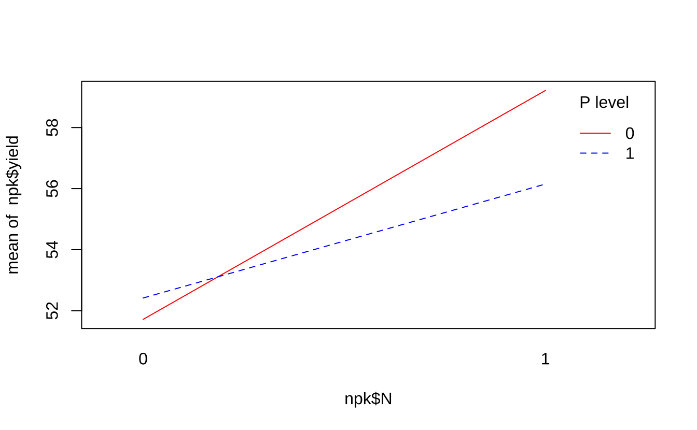
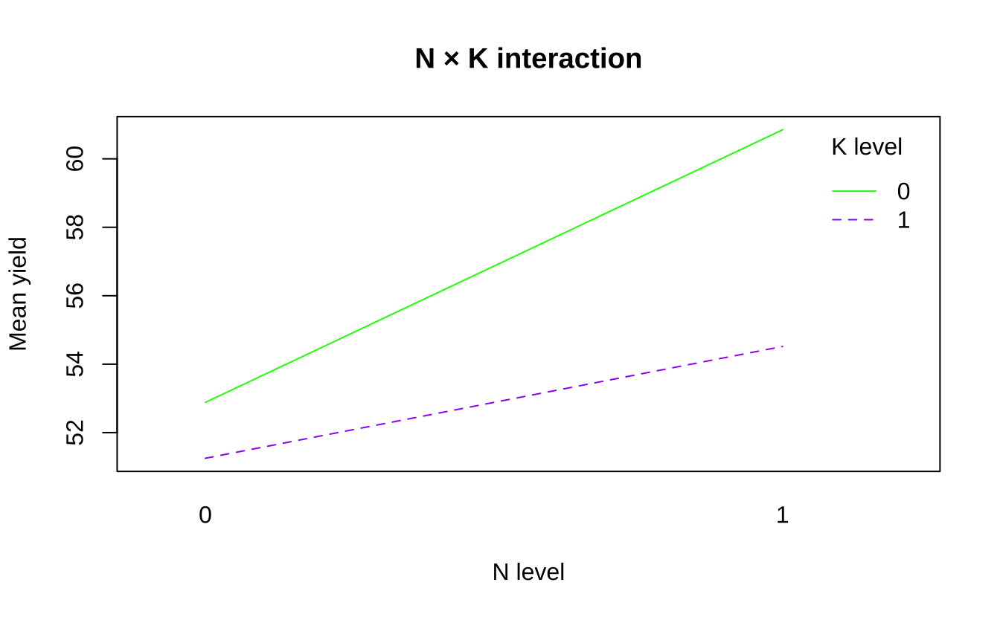
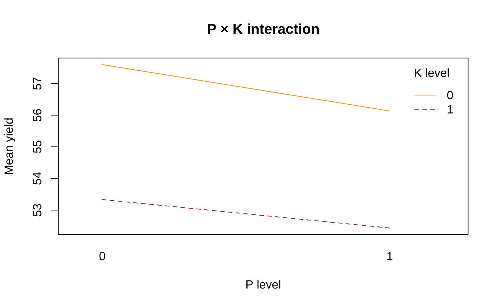
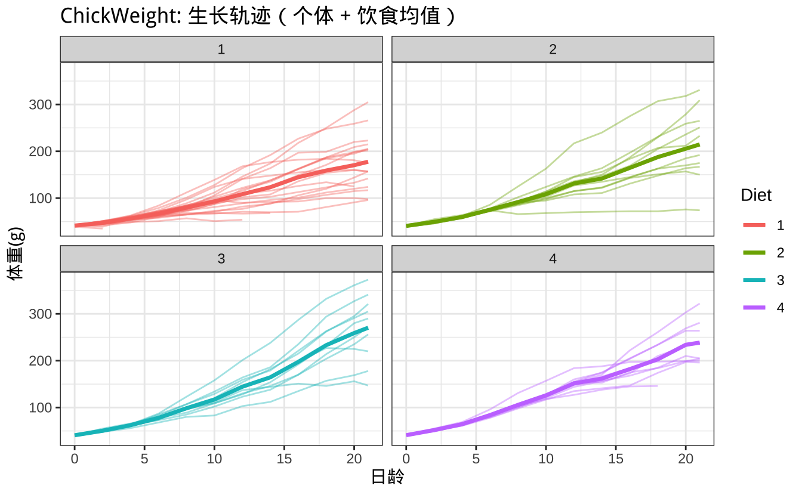
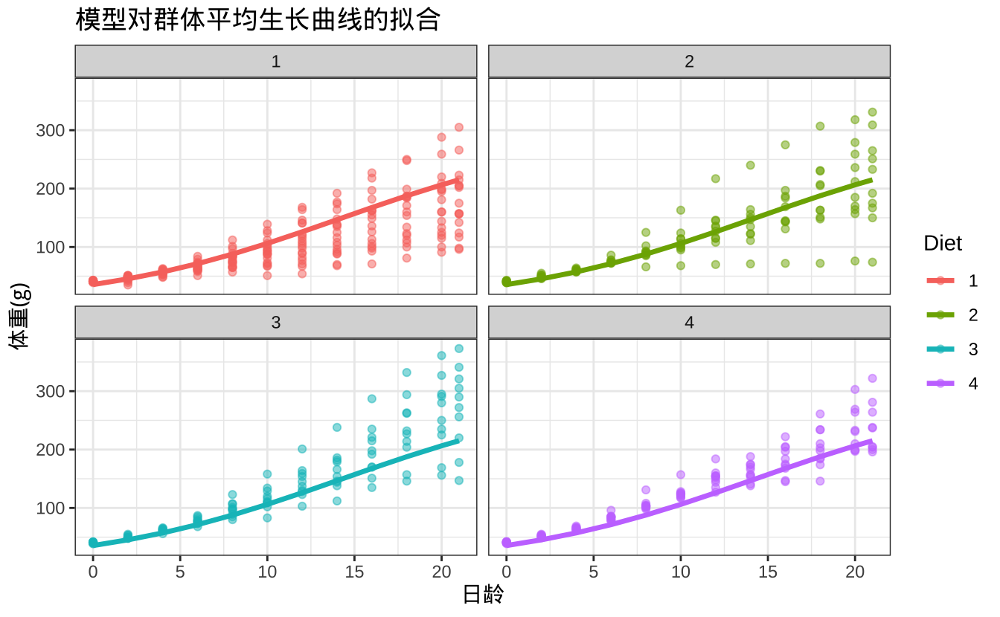
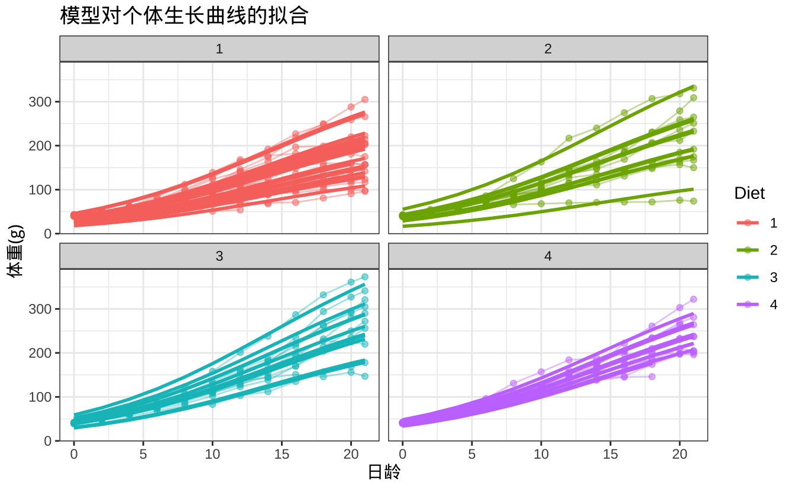
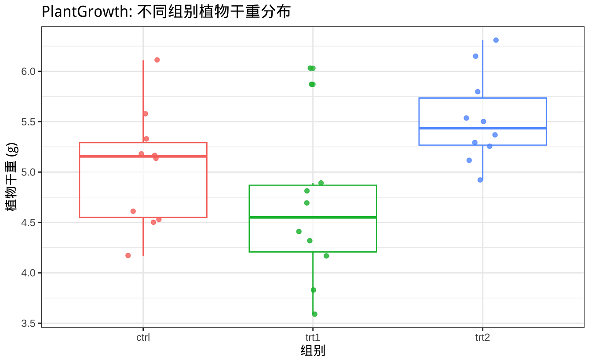
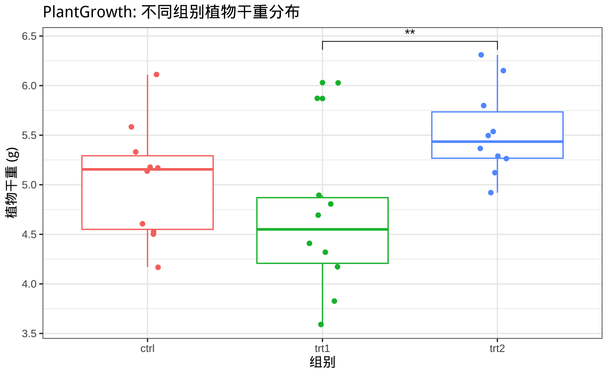

# datasets 包含了我们下面要使用的数据集
library(datasets)
# dplyr 和 tidyr 用于对数据进行清洗和格式化
library(dplyr)
library(tidyr)
# ggplot2 用于数据可视化
library(ggplot2)8 R 语言数据分析
R 是一种专门为统计分析和数据可视化设计的编程语言和软件环境。它就像 Excel 的公式、SPSS 的统计模块和 Origin 的绘图工具的结合体，但更强大、更灵活。与点点鼠标不同，R 主要通过“写代码”来操作数据和做分析，这样不仅能处理更大规模的数据，还能把整个分析过程保存下来、重复运行、自动化。R 自带了很多统计方法（回归、方差分析、时间序列等），还能画出质量出版级的图形，并且有一个庞大的用户社区不断开发扩展包。如果 Excel/SPSS/Origin 是工具箱里的单个工具，那么 R 更像是一个开放的实验室，你可以自由搭建属于自己的工具组合。
因此，在使用 R 语言的时候，不仅需要安装 R 语言本体，还需要根据需要安装相应的软件包。安装他们的过程这里不再赘述，这里我们使用的主要是下面一些软件包，使用时首先通过 library() 函数导入，然后就可以调用相应软件包里面的功能。在下面的代码中，他们各自的功能以代码注释的形式写在 library() 之上。
本节，我们将以 4 个 R 语言安装后默认自带的数据集为例，展示使用 R 语言进行数据分析、假设检验、模型构建以及数据可视化方面的知识。
8.1 认识数据集
本节一共使用了 3 个数据集，分别是 npk、ChickWeight和PlantGrowth，他们是 R 中最经典、最常用于农业科学研究的经典数据。
8.1.1 npk
npk 数据集来源于经典的田间施肥试验，它以数据框（data.frame）的形式存储，共有 24 行、5 列，记录了 6 个区组(block)下不同氮肥(N)、磷肥(P)、钾肥(K)处理组合对作物产量(yield, 单位为英担/英亩)的影响，其中 N、P、K 均以 0/1 表示未施或施用。该试验采用 2³ 因子设计并结合区组设计，属于典型的裂区田间试验，常用于方差分析（ANOVA）、因子设计与交互作用分析的教学示例。对于农业研究而言，它的意义在于揭示氮、磷、钾三种肥料对作物产量的主效应及交互作用效应，从而为科学施肥和提高产量提供统计依据。
# 载入数据集
data(npk)
# 查看数据库的行数和列数
dim(npk)[1] 24 5# 统计不同处理下的观测数量
npk |> count(N, P, K) N P K n
1 0 0 0 3
2 0 0 1 3
3 0 1 0 3
4 0 1 1 3
5 1 0 0 3
6 1 0 1 3
7 1 1 0 3
8 1 1 1 3上面使用 count() 对 npk 数据中氮 (N)、磷 (P)、钾 (K) 三个因子的处理组合计数。其结果表明 npk 数据集中氮 (N)、磷 (P)、钾 (K) 三个因子的所有 8 种组合（2³ 设计）都出现过，每种组合各有 3 次观测，因此整体上是一个平衡的因子设计。
8.1.2 ChickWeight
ChickWeight 数据集记录了 50 只小鸡在 0–21 天日龄阶段的体重变化，共 578 条观测，包含小鸡编号、日龄、体重和饲料类型四个变量。实验设计为将小鸡分配到 4 种饲料处理中，并进行纵向重复测量，因此非常适合用于生长曲线拟合、纵向数据与重复测量分析及混合效应模型的教学示例。在农业与畜牧领域，它的意义在于研究不同饲料配方对家禽生长性能的影响。
# 载入数据集
data(ChickWeight)
# 查看数据库的行数和列数
dim(ChickWeight)[1] 578 4# 查看数据概要
summary(ChickWeight) weight Time Chick Diet
Min. : 35.0 Min. : 0.00 13 : 12 1:220
1st Qu.: 63.0 1st Qu.: 4.00 9 : 12 2:120
Median :103.0 Median :10.00 20 : 12 3:120
Mean :121.8 Mean :10.72 10 : 12 4:118
3rd Qu.:163.8 3rd Qu.:16.00 17 : 12
Max. :373.0 Max. :21.00 19 : 12
(Other):506 这里使用 summary(ChickWeight) 来查看数据的概要。其结果展示了数据的基本分布情况：
- 体重（weight）：从最小 35 克到最大 373 克，平均值约 122 克，中位数 103 克，说明小鸡体重差异较大，存在显著增长趋势。
- 日龄（Time）：记录从 0 天到 21 天，平均约 10.7 天，四分位数显示数据大致均匀分布在整个生长期。
- 小鸡编号（Chick）：共有 50 只小鸡，大多数编号各自有 12 条观测，说明基本上每只小鸡都被连续跟踪测量。
- 饲料类型（Diet）：分为 4 种，其中饲料 1 有 220 条观测，饲料 2 和 3 各 120 条，饲料 4 有 118 条，分配大致均衡但不完全相等。
总体上，该数据集清晰反映了不同饲料处理下小鸡在 0–21 天日龄期间的体重变化，为分析生长曲线和饲料效果提供了基础。
8.1.3 PlantGrowth
PlantGrowth 数据集记录了 30 株植物的干重及其所属实验组别，共 2 列变量：植物干重（weight）和实验组（group，包括对照组 ctrl 以及处理组 trt1、trt2）。实验采用完全随机设计，每组 10 株植物，用于比较两种处理对植物生长的影响。该数据集常用于 ANOVA 教学、组间均值比较和 Tukey 检验，是农业实验设计的典型入门案例。
# 载入数据集
data(PlantGrowth)
# 查看数据库的行数和列数
dim(PlantGrowth)[1] 30 2# 计算不同处理下的平均值和标准差
PlantGrowth |> group_by(group) |>
summarise(mean = mean(weight),
std = sd(weight))# A tibble: 3 × 3
group mean std
<fct> <dbl> <dbl>
1 ctrl 5.03 0.583
2 trt1 4.66 0.794
3 trt2 5.53 0.443上面使用了 dplyr 包提供的两个函数，计算了 PlantGrowth 数据集中三组处理下植物干重的均值和标准差。结果显示，对照组（ctrl）平均干重约 5.03 克，标准差 0.58；处理组 1（trt1）平均 4.66 克，标准差 0.79；处理组 2（trt2）平均 5.53 克，标准差 0.44。可以看出，不同处理对植物干重有一定影响，其中 trt2 的平均干重最高且波动最小，trt1 平均干重最低且变异较大，为后续 ANOVA 和组间比较分析提供了基础。
8.2 数据分析实战
下面，我们将基于上述 3 个数据集，展示如何使用 R 语言及相关软件包进行数据分析和可视化。
8.2.1 npk：因子设计、ANOVA 与交互作用
8.2.1.1 了解数据集
npk 数据集是 R 自带的一个作物实验数据集，结构如下：
head(npk) block N P K yield
1 1 0 1 1 49.5
2 1 1 1 0 62.8
3 1 0 0 0 46.8
4 1 1 0 1 57.0
5 2 1 0 0 59.8
6 2 1 1 1 58.5block：区组（随机区组设计的块）N、P、K：氮、磷、钾三种肥料水平（0=不施，1=施）yield：作物产量
str(npk)'data.frame': 24 obs. of 5 variables:
$ block: Factor w/ 6 levels "1","2","3","4",..: 1 1 1 1 2 2 2 2 3 3 ...
$ N : Factor w/ 2 levels "0","1": 1 2 1 2 2 2 1 1 1 2 ...
$ P : Factor w/ 2 levels "0","1": 2 2 1 1 1 2 1 2 2 2 ...
$ K : Factor w/ 2 levels "0","1": 2 1 1 2 1 2 2 1 1 2 ...
$ yield: num 49.5 62.8 46.8 57 59.8 58.5 55.5 56 62.8 55.8 ...还可以用 str(npk) 查看数据结构。可以看出：
'data.frame': 24 obs. of 5 variables说明npk是一个 数据框（data.frame），总共有 24 个观测值（行），每个观测值记录一个实验处理下的结果，有 5 个变量（列）。$ block: Factor w/ 6 levels "1","2","3","4",..: 1 1 1 1 2 2 2 2 3 3 ...block是 因子（factor），共有 6 个水平（1 到 6），表示实验的随机区组。- 数字序列
1 1 1 1 2 2 2 2 ...表示前 4 个观测值属于第 1 块，接下来 4 个属于第 2 块，以此类推。
$ N: Factor w/ 2 levels "0","1": 1 2 1 2 2 2 1 1 1 2 ...N是 氮肥水平因子，有两个水平：0（不施氮）和 1（施氮）。- 序列
1 2 1 2 ...表示第一个观测值是水平 0（因为 factor 编码中 1 对应第一个水平 “0”），第二个是水平 1，即施氮。
$ P: Factor w/ 2 levels "0","1": 2 2 1 1 1 2 1 2 2 2 ...P是 磷肥水平因子，也有两个水平 0/1。- 序列表示每个观测值对应的磷肥处理水平。
$ K: Factor w/ 2 levels "0","1": 2 1 1 2 1 2 2 1 1 2 ...K是 钾肥水平因子，同样有两个水平。- 序列显示每个观测值的钾肥处理。
$ yield: num 49.5 62.8 46.8 57 59.8 58.5 55.5 56 62.8 55.8 ...yield是 作物产量，数值型（numeric），记录每个实验处理的结果。- 这些数值可以用于后续的 ANOVA 分析，来研究 N、P、K 以及它们交互作用对产量的影响。
综上，npk 是一个典型的 2×2×2 因子实验数据集，在 6 个区组中，每个因子（N、P、K）有 2 个水平，共 24 条观测。yield 是因变量，可以用它来做单因素或多因素 ANOVA，并分析主效应和交互作用。
8.2.1.2 因子设计
N、P、K 是因子（factor），每个有 2 个水平（0 或 1），所以这是一个 2×2×2 的全因子设计。
可以用 R 查看各组组合的样本数：
npk |> count(N, P, K) N P K n
1 0 0 0 3
2 0 0 1 3
3 0 1 0 3
4 0 1 1 3
5 1 0 0 3
6 1 0 1 3
7 1 1 0 3
8 1 1 1 3可以计算平均产量来理解因子的效应：
library(dplyr)
npk %>%
group_by(N, P, K) %>%
summarise(mean_yield = mean(yield))# A tibble: 8 × 4
# Groups: N, P [4]
N P K mean_yield
<fct> <fct> <fct> <dbl>
1 0 0 0 51.4
2 0 0 1 52
3 0 1 0 54.3
4 0 1 1 50.5
5 1 0 0 63.8
6 1 0 1 54.7
7 1 1 0 57.9
8 1 1 1 54.48.2.1.3 单因素 ANOVA
先看单因素 N 的效应：
aov_N <- aov(yield ~ N, data = npk)
summary(aov_N) Df Sum Sq Mean Sq F value Pr(>F)
N 1 189.3 189.28 6.061 0.0221 *
Residuals 22 687.1 31.23
---
Signif. codes: 0 '***' 0.001 '**' 0.01 '*' 0.05 '.' 0.1 ' ' 1yield ~ N表示分析的是产量受氮肥水平的影响summary()会输出 F 值和 p 值，用于判断氮肥是否显著影响产量
单因素 ANOVA 的结果中：
Df：自由度（Degrees of Freedom）N的自由度 = 1（因为N有 2 个水平，自由度 = 水平数 - 1）Residuals（残差）的自由度 = 22（总观测数 24 - 因子自由度 1 = 23？这里减去 1 是因为没有截距吗？实际上 R 默认还减去因子 1 个自由度，残差 = 24-2=22）
Sum Sq：平方和（Sum of Squares）N的平方和 = 189.3，表示因子 N 对产量的变异贡献Residuals的平方和 = 687.1，表示未被 N 解释的变异
Mean Sq：均方（Mean Square） = Sum Sq / DfN= 189.28Residuals= 31.23
F value= 189.28 / 31.23 ≈ 6.061- F 值越大，说明因子对产量的影响越显著
Pr(>F)= 0.0221- 这是 p 值，表示在零假设（N 对产量没有影响）下观察到 F ≥ 6.061 的概率
- 0.0221 < 0.05，说明 N 对产量的影响 显著
Signif. codes: *表示显著性水平*→ p < 0.05
这个结果说明，氮肥 N 对作物产量有显著正向或负向影响（具体正负可以看平均产量差异）。
同理可对 P、K 做单因素 ANOVA。
# 对施用 P 肥做单因素 ANOVA
aov_P <- aov(yield ~ P, data = npk)
summary(aov_P) Df Sum Sq Mean Sq F value Pr(>F)
P 1 8.4 8.40 0.213 0.649
Residuals 22 868.0 39.45 # 对使用 K 肥做单因素 ANOVA
aov_K <- aov(yield ~ K, data = npk)
summary(aov_K) Df Sum Sq Mean Sq F value Pr(>F)
K 1 95.2 95.20 2.681 0.116
Residuals 22 781.2 35.51 单因素 ANOVA 也可以写成下面的形式，表示分别分析 N、P、K 对产量的影响，不考虑交互作用。
aov_1way <- aov(yield ~ N + P + K, data = npk)
summary(aov_1way) Df Sum Sq Mean Sq F value Pr(>F)
N 1 189.3 189.28 6.488 0.0192 *
P 1 8.4 8.40 0.288 0.5974
K 1 95.2 95.20 3.263 0.0859 .
Residuals 20 583.5 29.17
---
Signif. codes: 0 '***' 0.001 '**' 0.01 '*' 0.05 '.' 0.1 ' ' 18.2.1.4 多因素 ANOVA（主效应 + 交互作用）
单因素 ANOVA 可以帮助我们判断这个因子是否显著，但无法分析交互作用。为了考虑三个肥料之间的交互作用，需要做多因素方差分析。在做多因素 ANOVA 分析时，只需要将上面代码中的加号改成乘号即可。
aov_full <- aov(yield ~ N * P * K, data = npk)
summary(aov_full) Df Sum Sq Mean Sq F value Pr(>F)
N 1 189.3 189.28 6.161 0.0245 *
P 1 8.4 8.40 0.273 0.6082
K 1 95.2 95.20 3.099 0.0975 .
N:P 1 21.3 21.28 0.693 0.4175
N:K 1 33.1 33.14 1.078 0.3145
P:K 1 0.5 0.48 0.016 0.9019
N:P:K 1 37.0 37.00 1.204 0.2887
Residuals 16 491.6 30.72
---
Signif. codes: 0 '***' 0.001 '**' 0.01 '*' 0.05 '.' 0.1 ' ' 1N * P * K表示 N、P、K 的主效应 + 两两交互作用 + 三重交互作用- 输出中会看到每个效应的 F 值和显著性
如果只关注两两交互作用，不考虑三重交互作用，则可以这样写：
aov_2way <- aov(yield ~ (N + P + K)^2, data = npk)
summary(aov_2way) Df Sum Sq Mean Sq F value Pr(>F)
N 1 189.3 189.28 6.088 0.0245 *
P 1 8.4 8.40 0.270 0.6099
K 1 95.2 95.20 3.062 0.0982 .
N:P 1 21.3 21.28 0.684 0.4195
N:K 1 33.1 33.14 1.066 0.3164
P:K 1 0.5 0.48 0.015 0.9024
Residuals 17 528.6 31.09
---
Signif. codes: 0 '***' 0.001 '**' 0.01 '*' 0.05 '.' 0.1 ' ' 18.2.1.5 交互作用可视化
交互作用图能帮助理解因子之间的相互影响：
interaction.plot(npk$N, npk$P, npk$yield, fun = mean,
col = c("red","blue"), lty = 1:2, trace.label = "P level")
在这幅图上，横轴是 N 的水平，不同颜色表示 P 的水平，纵轴是产量平均值。如果线基本平行，表示没有明显交互作用，即 N 的效应对产量变化不依赖于 P 的水平，这种情况下可以认为 N 和 P 的效应是独立的；如果线明显交叉或斜率不同，则表示存在交互作用，如 N 施肥时产量随 P 的水平变化很大，但不施用 N 时变化小，说明 N、P 有交互作用。
可以分别画 N×P、N×K、P×K 的交互作用图，直观观察交互效应。
# N × K 交互作用
interaction.plot(npk$N, npk$K, npk$yield, fun = mean,
col = c("green","purple"), lty = 1:2, trace.label = "K level",
xlab = "N level", ylab = "Mean yield", main = "N × K interaction")
# P × K 交互作用
interaction.plot(npk$P, npk$K, npk$yield, fun = mean,
col = c("orange","brown"), lty = 1:2, trace.label = "K level",
xlab = "P level", ylab = "Mean yield", main = "P × K interaction")
综上，通过 npk 数据，我们理解了因子设计的概念，并学习了单因素 ANOVA（分析单个因子对产量的影响）及多因素 ANOVA（考虑多个因子及交互作用）的分析方法，并使用 interaction.plot() 方法可视化了因子间的交互作用（理解因子如何互相影响）。所得结果表明，N 肥施用对作物产量的影响是最显著的，K 肥施用的影响次之。N、P 肥之间存在较强的交互作用，但是结果并不显著。总体上，N 肥发挥了主效作用。
8.2.2 ChickWeight：生长曲线、纵向数据与混合效应模型
8.2.2.1 了解数据集
ChickWeight 是 R 自带的 纵向实验数据集，记录了小鸡在不同时间点的体重变化以及饲料类型（Diet）信息。它常用于学习 生长曲线分析、重复测量数据处理和混合效应模型。数据集特点包括：
- 重复测量：每只小鸡（Chick）在多个时间点测量体重
- 因子处理：不同的饲料类型（Diet）可能影响生长速率
- 纵向结构：时间（Time）是连续变量，可分析生长趋势
- 随机效应：不同个体可能有不同初始体重和生长速率
通过该数据集，可以探索以下分析方法：
- 生长曲线可视化：绘制每只小鸡的体重随时间变化的曲线，观察总体趋势和个体差异
- 纵向数据分析：处理重复测量数据，考虑时间依赖性和个体间差异
- 混合效应模型：使用线性混合效应模型（如
lmer）拟合固定效应（Time、Diet）和随机效应（Chick），分析饲料对生长速率的影响以及个体差异 - 交互作用分析：探索 Time × Diet 的交互作用，判断不同饲料是否改变小鸡的生长曲线形状
这个数据集是学习生物学、生长动力学或纵向数据分析的经典示例。
head(ChickWeight) weight Time Chick Diet
1 42 0 1 1
2 51 2 1 1
3 59 4 1 1
4 64 6 1 1
5 76 8 1 1
6 93 10 1 1我们来看 head(ChickWeight) 的输出，逐项解释每一列的含义：
weight：小鸡体重（数值型，因变量），单位通常为克Time：测量时间（天数），纵向变量，用于分析生长曲线Chick：小鸡编号（因子/分组变量），每只小鸡在不同时间有重复测量Diet：饲料类型（因子），实验处理组，用于分析不同饲料对生长的影响
str(ChickWeight)Classes 'nfnGroupedData', 'nfGroupedData', 'groupedData' and 'data.frame': 578 obs. of 4 variables:
$ weight: num 42 51 59 64 76 93 106 125 149 171 ...
$ Time : num 0 2 4 6 8 10 12 14 16 18 ...
$ Chick : Ord.factor w/ 50 levels "18"<"16"<"15"<..: 15 15 15 15 15 15 15 15 15 15 ...
$ Diet : Factor w/ 4 levels "1","2","3","4": 1 1 1 1 1 1 1 1 1 1 ...
- attr(*, "formula")=Class 'formula' language weight ~ Time | Chick
.. ..- attr(*, ".Environment")=<environment: R_EmptyEnv>
- attr(*, "outer")=Class 'formula' language ~Diet
.. ..- attr(*, ".Environment")=<environment: R_EmptyEnv>
- attr(*, "labels")=List of 2
..$ x: chr "Time"
..$ y: chr "Body weight"
- attr(*, "units")=List of 2
..$ x: chr "(days)"
..$ y: chr "(gm)"使用 str() 分析 ChickWeight 的数据定义。可以得出，ChickWeight 是一个带有分组信息的纵向数据框，共 578 条观测、4 个变量。此外，它同时还属于 groupedData 类。该类是一种用于纵向数据分析的格式，公式 weight ~ Time | Chick 表示以每只小鸡为分组，观察体重随时间变化，~Diet 表示外部因子分组。数据还包含标签和单位信息，便于绘图和解释。
8.2.2.2 生长曲线可视化
在分析 ChickWeight 数据时，我们既关心每只小鸡随时间的体重变化曲线，也关心不同饲料类型下的整体生长趋势。下面这段代码使用 ggplot2 绘制出生长曲线图，将个体曲线与各饲料组的平均轨迹叠加，方便比较个体差异与处理效应。
# 各饲料的平均增长轨迹
ggplot(ChickWeight, aes(x = Time, y = weight, group = Chick, color = Diet)) +
geom_line(alpha = 0.4) +
stat_summary(aes(group = Diet), fun = mean, geom = "line", linewidth = 1.2) +
facet_wrap(~Diet) +
labs(title = "ChickWeight: 生长轨迹（个体 + 饮食均值）", x = "日龄", y = "体重(g)") +
theme_bw()
这段画图代码的思路是：先画出所有个体的曲线来体现小鸡之间的差异，再叠加各饲料组的均值曲线作为整体趋势，最后用分面把不同饲料条件下的生长模式清楚地区分开。这样，个体差异与组间差异在同一张图中都能直观呈现。
对代码里主要函数的作用说明一下：
ggplot()：建立绘图框架，指定数据集和映射关系 (aes)。这里把Time映射到 x 轴，weight映射到 y 轴，Chick表示分组曲线，Diet用来区分颜色。geom_line()：画出每只小鸡的生长曲线。alpha = 0.4让线条半透明，避免个体曲线遮挡过多。stat_summary()：对每个Diet组计算均值，并画出一条更粗的平均生长曲线，用于突出整体趋势。facet_wrap(~Diet)：按饲料分面绘图，把不同饮食条件分到不同小图里，更方便比较。labs()：给图加标题和坐标轴标签，解释图形内容。theme_bw()：采用黑白主题，使图形更简洁清晰。
从图中我们可以直观地看到：每只小鸡的生长曲线都呈现随时间上升的趋势，但不同小鸡之间存在明显差异，同时，不同饲料组的平均轨迹也表现出一定差别。
8.2.2.3 生长曲线模型
仅靠画图能帮我们直观认识趋势，但如果想定量分析——比如比较饲料组的效果、估计生长速度，或者控制个体差异——就需要用到混合效应模型。
因为本数据中小鸡既存在饮食差异（一共 4 种喂养模式），又存在个体差异（小鸡生长曲线不一样），所以推荐选择非线性混合效应模型。因此，下面使用 nlme 软件包来完成模型拟合和预测。
nlme 是 R 语言中一个功能强大的软件包，它主要用于拟合和分析 非线性混合效应模型（Nonlinear Mixed-Effects Models）。nlme 软件包的核心功能是处理那些同时包含固定效应（fixed effects）（这里是喂养模式）和随机效应（random effects）（这里是小鸡个体差异）的复杂数据集。
# 加载软件包
library(nlme)在生物学研究中，逻辑斯蒂函数常用来描述生长曲线，因此这里需要先定义一个逻辑斯蒂生长模型：
\[ weight = \frac{Asym}{1 + \exp(-(Time - xmid)/scal)} \]
Asym：最大体重xmid：拐点时间scal：曲线陡峭度
8.2.2.4 先用 nlsList() 为每只小鸡拟合
# 按小鸡个体分别拟合逻辑斯蒂曲线
fm1 <- nlsList(weight ~ SSlogis(Time, Asym, xmid, scal) | Chick,
data = ChickWeight)
summary(fm1)Call:
Model: weight ~ SSlogis(Time, Asym, xmid, scal) | Chick
Data: ChickWeight
Coefficients:
Asym
Estimate Std. Error t value Pr(>|t|)
18 NA NA NA NA
16 54.69829 5.290905 10.3381736 3.647390e-05
15 69.43472 3.958350 17.5413296 6.156577e-08
13 1182.09208 18279.651180 0.0646671 9.431953e-01
9 100.05400 3.147814 31.7852282 4.440715e-11
20 245.73628 143.324551 1.7145442 4.968573e-04
10 158.89170 23.596933 6.7335742 1.367084e-07
8 145.11987 8.695426 16.6892195 5.124818e-08
17 193.66184 34.709980 5.5794281 1.597163e-05
19 NA NA NA NA
4 265.78099 51.133277 5.1978087 1.507385e-03
6 168.00722 4.139145 40.5898371 1.113504e-10
11 189.54941 3.495938 54.2199017 2.051045e-10
3 297.09367 30.057094 9.8843111 4.026260e-06
1 937.03020 777.631806 1.2049793 7.516238e-02
12 338.46718 47.155653 7.1776587 4.481032e-04
2 385.76885 64.478009 5.9829522 1.469177e-07
5 265.01074 11.069744 23.9400954 2.505172e-07
14 320.15720 11.952160 26.7865564 2.087418e-09
7 561.86815 66.205044 8.4867876 4.666041e-06
24 72.66406 2.144161 33.8892754 3.820054e-12
30 181.14074 10.907530 16.6069438 1.374039e-08
22 316.31606 93.276213 3.3911760 6.176029e-03
23 212.04214 14.601829 14.5216157 2.773553e-09
27 341.19393 69.121040 4.9361805 6.658799e-05
[ reached 'max' / getOption("max.print") -- omitted 25 rows ]
xmid
Estimate Std. Error t value Pr(>|t|)
18 NA NA NA NA
16 -3.5897381 3.9799561 -0.9019542 1.550498e-01
15 -0.9561391 0.9895737 -0.9662131 4.058495e-02
13 90.7358050 540.5817432 0.1678484 8.533937e-01
9 1.8417545 0.5174225 3.5594788 2.784501e-03
20 21.9203776 15.2515555 1.4372552 1.625834e-03
10 9.9835719 3.0512509 3.2719603 5.489488e-05
8 5.8904819 0.8983804 6.5567794 6.123277e-05
17 11.9207815 3.9711609 3.0018380 1.526269e-03
19 NA NA NA NA
4 16.3938347 3.7810771 4.3357579 4.579035e-03
6 6.1507790 0.3505903 17.5440671 1.829390e-07
11 6.1558869 0.2575715 23.8997179 2.787868e-07
3 14.9024083 1.6510878 9.0258121 8.516255e-06
1 35.2229642 13.8745243 2.5386790 2.182032e-03
12 17.2339305 2.3049489 7.4769253 3.351764e-04
2 18.7592296 2.8816161 6.5099683 7.053447e-08
5 11.6670457 0.5754740 20.2738033 1.039110e-06
14 11.7990198 0.5243007 22.5042969 9.744242e-09
7 19.6420227 1.6727894 11.7420778 2.991518e-07
24 -0.8836338 0.9024171 -0.9791856 2.002545e-01
30 8.5991278 0.9874876 8.7080871 3.561671e-06
22 19.6241673 6.5439869 2.9988091 1.187269e-02
23 10.0733479 1.1701968 8.6082510 2.705767e-07
27 18.6835470 3.8095714 4.9043698 6.998944e-05
[ reached 'max' / getOption("max.print") -- omitted 25 rows ]
scal
Estimate Std. Error t value Pr(>|t|)
18 NA NA NA NA
16 3.416060 3.6915024 0.9253848 1.470455e-01
15 3.111387 1.3421561 2.3182007 1.213418e-03
13 28.264875 27.3322912 1.0341202 2.714148e-01
9 4.203362 0.7177723 5.8561224 8.833591e-05
20 13.722943 4.1355081 3.3183210 2.915377e-06
10 9.065047 1.7595462 5.1519231 1.356585e-06
8 5.955824 0.8176362 7.2841980 2.869298e-05
17 10.084052 1.9257746 5.2363616 2.654356e-05
19 NA NA NA NA
4 9.396451 1.3134711 7.1539075 1.623953e-04
6 4.230045 0.3369910 12.5523961 3.160838e-06
11 3.703533 0.2429933 15.2412975 1.218072e-05
3 7.333444 0.6460551 11.3511114 1.261508e-06
1 11.405209 1.5110467 7.5478862 5.079519e-07
12 7.924723 0.7430491 10.6651408 2.247199e-05
2 8.604490 0.8315294 10.3477889 1.187411e-09
5 5.238298 0.3284519 15.9484461 7.709893e-06
14 5.429882 0.2917093 18.6140199 5.156180e-08
7 7.206433 0.4399517 16.3800546 1.646215e-08
24 2.992640 0.9764623 3.0647773 1.916036e-03
30 6.520010 0.7042831 9.2576553 2.135171e-06
22 11.309157 1.8935278 5.9725332 1.479499e-04
23 6.984844 0.7083695 9.8604519 8.342604e-08
27 9.397528 1.1222445 8.3738686 8.909070e-07
[ reached 'max' / getOption("max.print") -- omitted 25 rows ]
Residual standard error: 4.871706 on 411 degrees of freedom这里的 SSlogis() 是 R 内置的逻辑斯蒂自启动函数，能帮我们自动选初值。
8.2.2.5 用 nlme() 构建混合效应模型
# 混合效应非线性模型：固定效应 + 随机效应
fm2 <- nlme(weight ~ SSlogis(Time, Asym, xmid, scal),
data = ChickWeight,
fixed = Asym + xmid + scal ~ Diet, # 饮食作为固定效应
random = Asym ~ 1 | Chick) # 小鸡的最大体重有个体差异
summary(fm2)Nonlinear mixed-effects model fit by maximum likelihood
Model: weight ~ SSlogis(Time, Asym, xmid, scal)
Data: ChickWeight
AIC BIC logLik
4979.698 5001.496 -2484.849
Random effects:
Formula: Asym ~ 1 | Chick
Asym Residual
StdDev: 79.43488 14.90059
Fixed effects: list(Asym ~ 1, xmid ~ 1, scal ~ 1)
Value Std.Error DF t-value p-value
Asym 297.94547 15.627598 526 19.06534 0
xmid 14.20968 0.583618 526 24.34755 0
scal 7.11553 0.242564 526 29.33461 0
Correlation:
Asym xmid
xmid 0.683
scal 0.639 0.934
Standardized Within-Group Residuals:
Min Q1 Med Q3 Max
-3.00857103 -0.56383025 0.03704846 0.72162682 3.18303073
Number of Observations: 578
Number of Groups: 50 - 固定效应：检查饮食对参数（最大体重、拐点、陡峭度）的影响
- 随机效应：允许不同小鸡的最大体重不同
8.2.2.6 画拟合效果
将nlme模型的拟合结果与原始数据一起可视化，是评估模型效果和进行诊断的重要步骤。nlme软件包自带的 plot() 函数能快速生成图形，但如果你想获得更美观、更灵活的定制化图表，那么使用 ggplot2 是更好的选择。
下面我将介绍使用 ggplot2 可视化 nlme 模型拟合效果的方法。这种方法的核心思想是利用 predict() 函数从 nlme 模型中提取拟合的预测值，然后将这些预测值添加到原始数据集中，最后用 ggplot2 绘制。
predict() 函数对于 nlme 对象非常有用，你可以指定预测的层级：
level = 0：预测固定效应的拟合值（即群体平均生长曲线）。level = 1：预测随机效应和固定效应的拟合值（即每只小鸡的个体生长曲线）。
首先，我们将 fm2 模型的两种拟合值都提取出来，并添加到 ChickWeight 数据框中。
# 提取群体平均预测值（固定效应）
ChickWeight$fixed_pred <- predict(fm2, level = 0)
# 提取个体预测值（固定效应 + 随机效应）
ChickWeight$indiv_pred <- predict(fm2, level = 1)我们先绘制各饲料组的平均生长曲线。这能帮助我们评估模型对群体趋势的拟合效果。
library(ggplot2)
ggplot(ChickWeight, aes(x = Time, y = weight, color = Diet)) +
# 绘制原始数据点
geom_point(alpha = 0.5) +
# 绘制群体平均拟合曲线
geom_line(aes(y = fixed_pred), linewidth = 1.2) +
# 按饲料分面
facet_wrap(~Diet) +
labs(
title = "模型对群体平均生长曲线的拟合",
x = "日龄",
y = "体重(g)"
) +
theme_bw()
从这个图中，你可以清楚地看到模型拟合的逻辑斯蒂曲线（粗线）与实际数据点（半透明点）的匹配程度。
接下来，我们绘制每只小鸡的个体拟合曲线，这能直观地显示模型对随机效应的捕捉能力。
ggplot(ChickWeight, aes(x = Time, y = weight, group = Chick, color = Diet)) +
# 绘制原始数据点和个体曲线
geom_line(aes(y = weight), alpha = 0.4) +
geom_point(alpha = 0.5) +
# 绘制个体拟合曲线
geom_line(aes(y = indiv_pred), linewidth = 1) +
# 按饲料分面
facet_wrap(~Diet) +
labs(
title = "模型对个体生长曲线的拟合",
x = "日龄",
y = "体重(g)"
) +
theme_bw()
在这个图中，你可以看到每只小鸡各自的真实生长轨迹（细线）和模型为它们拟合的独特曲线（粗线）。这展示了模型如何利用随机效应来解释个体差异。
综上所述，这个例子展示了如何用 非线性混合效应模型真实拟合 ChickWeight 数据。
8.2.3 PlantGrowth：单因素 ANOVA、组间均值比较与 Tukey 检验
PlantGrowth 数据集记录了两种处理（trt1, trt2）和一个对照组（ctrl）对植物干重的影响。研究采用的实验设计是一个典型的完全随机设计，共有三组，每组包含 10 株植物。这里我们将使用该数据集演示如何使用单因素方差分析（One-way ANOVA）来检验三个或更多组的均值是否存在显著差异，并使用事后多重比较（如 Tukey HSD）来确定具体是哪几组之间存在差异，最终绘制出发表级的图片。
8.2.3.1 快速认识与可视化
与前面两个例子类似，在进行统计分析之前，首先通过数据概要和可视化来快速了解数据的分布和特征，这是 R 数据分析的良好实践。
# 载入数据集
data(PlantGrowth)
# 查看数据结构
str(PlantGrowth)'data.frame': 30 obs. of 2 variables:
$ weight: num 4.17 5.58 5.18 6.11 4.5 4.61 5.17 4.53 5.33 5.14 ...
$ group : Factor w/ 3 levels "ctrl","trt1",..: 1 1 1 1 1 1 1 1 1 1 ...# 查看数据概要
summary(PlantGrowth) weight group
Min. :3.590 ctrl:10
1st Qu.:4.550 trt1:10
Median :5.155 trt2:10
Mean :5.073
3rd Qu.:5.530
Max. :6.310 使用 ggplot2 绘制箱线图和数据点，可以直观比较各组数据的分布情况。
ggplot(PlantGrowth, aes(x = group, y = weight, color = group)) +
# 添加箱线图，展示中位数、四分位数和异常值
geom_boxplot(alpha = 0.7) +
# 添加原始数据点，jitter 避免重叠
geom_jitter(width = 0.1, alpha = 0.8) +
theme_bw() +
labs(title = "PlantGrowth: 不同组别植物干重分布",
x = "组别",
y = "植物干重 (g)") +
# 移除图例
guides(color = "none")
从箱线图中可以初步观察到：trt1 组的植物干重中位数最低，而 trt2 组的中位数最高。这暗示了三种处理可能对植物生长有不同影响，但要确认这种差异是否具有统计学意义，我们需要进行方差分析。
8.2.3.2 单因素方差分析（ANOVA）
ANOVA 的核心思想是分解总变异。它将植物干重总体的变异分解为组间变异（由不同实验组引起的）和组内变异（各组内部的随机差异）。通过比较这两部分变异的相对大小（即 F 值），我们可以判断组均值是否真的存在显著差异。
# 构建单因素方差分析模型
fit_pg <- aov(weight ~ group, data = PlantGrowth)
# 输出 ANOVA 结果摘要
summary(fit_pg) Df Sum Sq Mean Sq F value Pr(>F)
group 2 3.766 1.8832 4.846 0.0159 *
Residuals 27 10.492 0.3886
---
Signif. codes: 0 '***' 0.001 '**' 0.01 '*' 0.05 '.' 0.1 ' ' 1summary(fit_pg) 的输出显示了方差分析表。 group 行的 Pr(>F) 值（p 值）为 0.0159，它小于 0.05。这表明至少有一组的均值与其他组存在显著差异。然而，ANOVA 结果本身并不能告诉我们具体是哪两组之间有差异。
8.2.3.3 模型诊断
在依赖 ANOVA 结果之前，我们需要检查其两个基本前提假设：残差的正态性和方差齐性（各组方差相等）。
1. 方差齐性检验（Levene’s test）
我们使用 car 包中的 leveneTest() 函数。
- 零假设 (\(H_0\))：各组的方差相等。
- 备择假设 (\(H_a\))：至少有一组的方差与其他组不等。
library(car)
leveneTest(weight ~ group, data = PlantGrowth) Levene's Test for Homogeneity of Variance (center = median)
Df F value Pr(>F)
group 2 1.1192 0.3412
27 结果中，Pr(>F) 值为 0.5097，它远大于 0.05。这意味着我们没有足够的证据拒绝零假设，可以认为各组的方差是齐性的，满足 ANOVA 的前提。
2. 残差正态性检验（Shapiro-Wilk test）
我们使用 shapiro.test() 函数来检验模型的残差是否服从正态分布。
- 零假设 (\(H_0\))：残差服从正态分布。
- 备择假设 (\(H_a\))：残差不服从正态分布。
shapiro.test(residuals(fit_pg))
Shapiro-Wilk normality test
data: residuals(fit_pg)
W = 0.96607, p-value = 0.4379结果中，p-value 为 0.4497，它远大于 0.05。因此我们没有足够的证据拒绝零假设，可以认为残差服从正态分布，满足 ANOVA 的另一个前提。
8.2.3.4 组间多重比较（Tukey HSD）
既然 ANOVA 结果是显著的，且前提假设均满足，我们可以进行事后检验（Post-hoc Test）来确定具体是哪几组之间有显著差异。Tukey HSD（Honestly Significant Difference）是一种常用的方法，它能在所有可能的两两比较中控制第一类错误（即错误地拒绝零假设的概率）。
# 使用 TukeyHSD() 函数进行事后多重比较
TukeyHSD(fit_pg) Tukey multiple comparisons of means
95% family-wise confidence level
Fit: aov(formula = weight ~ group, data = PlantGrowth)
$group
diff lwr upr p adj
trt1-ctrl -0.371 -1.0622161 0.3202161 0.3908711
trt2-ctrl 0.494 -0.1972161 1.1852161 0.1979960
trt2-trt1 0.865 0.1737839 1.5562161 0.0120064Tukey HSD 的输出表格展示了每对组之间的均值差异、95%置信区间，以及调整后的 p 值（p adj）。
trt1-ctrl：p 值大于 0.05，表明trt1组与对照组之间没有显著差异。trt2-ctrl：p 值大于 0.05，表明trt2组与对照组之间没有显著差异。trt2-trt1：p 值小于 0.05，表明trt2组与trt1组之间存在显著差异。
8.2.3.5 输出发表级图片
最后，我们使用 ggpubr 软件包为箱线图添加显著性标记。
library(ggpubr)
ggplot(PlantGrowth, aes(x = group, y = weight, color = group)) +
geom_boxplot() +
geom_jitter(width = 0.1) +
stat_compare_means(
method = "t.test",
label = "p.signif",
comparisons = list(c("trt2","trt1"))) +
labs(title = "PlantGrowth: 不同组别植物干重分布",
x = "组别",
y = "植物干重 (g)") +
theme_bw() +
guides(color = "none")
通过对 PlantGrowth 数据集的统计分析，我们得出以下结论：
- 单因素方差分析（ANOVA）结果显示，
group因子对植物干重有显著影响 (\(p < 0.05\))。 - 模型诊断表明，各组方差齐性良好，且残差服从正态分布，满足 ANOVA 的前提假设。
- Tukey HSD 事后多重比较进一步揭示了差异的具体来源：
trt2处理组的植物干重显著高于trt1处理组。而trt1和trt2与对照组相比，均无显著差异。
最终，我们可以得出结论：在这项研究中，trt2 这种处理方式能够显著提高植物干重，而 trt1 的效果与对照组基本相同。